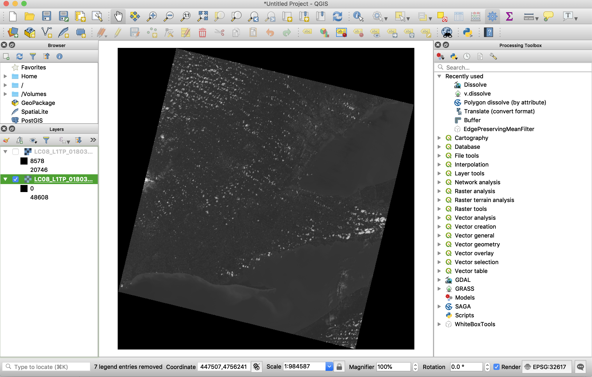
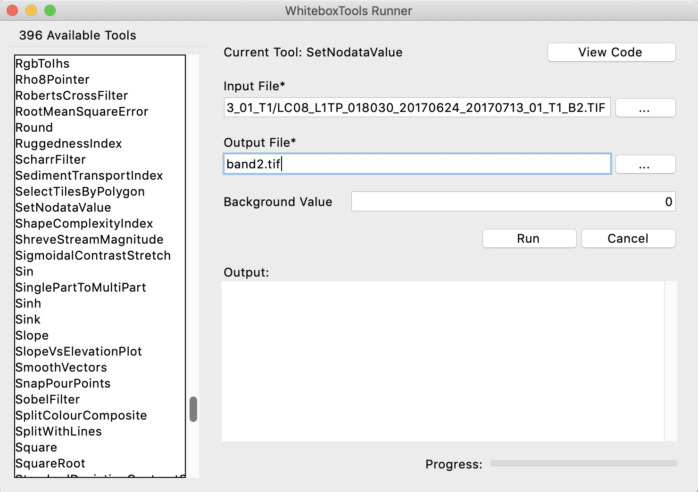
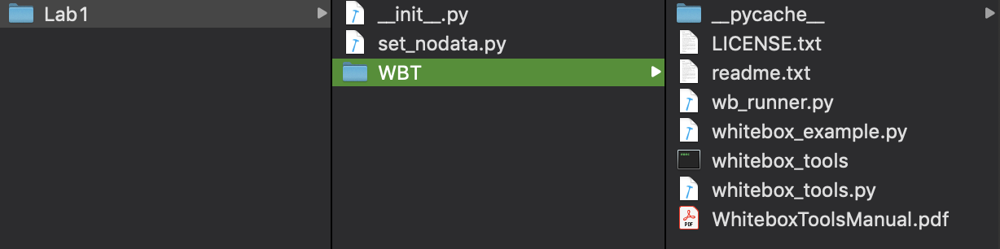

Part 2: Multispectral Imagery Data
In this course, we will be manipulating and analyzing remotely sensed data using the WhiteboxTools advanced geospatial analysis platform. You are free to use whatever software you are familiar with for visualizing the imagery data in the labs, including QGIS, ArcGIS, or any other spatial analysis software capable of displaying georeferenced imagery data. See the Before you begin section of the introduction for more details.
After you have downloaded the data associated with this lab assignment from the CourseLink page, decompress (unzip) the data into a working directory that you have created to dedicate to this assignment. Open the contents of this folder and examine the files contained within. These data are the multiple bands, in GeoTIFF image format, of a Landsat scene acquired June 24, 2017. The scene covers a region of southern Ontario spanning from St. Thomas in the southwest to east Toronto.
In the field of remote sensing, the word band refers to a single image contained within a multispectral or hyperspectral dataset. A band corresponds to a single, usually narrow, region of the electromagnetic spectrum. Band images are usually greyscale and display information about the relative brightness of the earth's surface at the pixel site across the range of wavelengths associated with the band. For example, in a Landsat 8 band 3 image, a bright white pixel corresponds to a surface material that is reflecting a significant amount of radiation in the 0.525 to 0.600 µm band of wavelengths, which the human eye interprets as green light. A dark coloured pixel, by comparison, would indicate that not much green light is being reflected by that surface material. Some bands within multispectral datasets are associated with regions of the spectrum that fall outside of the visible region (e.g. near-infrared, shortwave infrared, and thermal infrared). Interpreting the relatively brightnesses of pixels within multiple band images can tell you a great deal about the nature of the surface at those sites. This is the basis of multispectral remote sensing data analysis.
Now open the metadata file LC08_L1TP_018030_20170624_20170713_01_T1_MTL.txt using a text editor such as Notepad or TextEdit or VS Code. This file contains a wealth of information describing the acquisition details and processing that has been carried out on these data.
2.1. What proportion of the land contained within the scene was covered with clouds at the time of acquisition? (1 mark)
2.2. What are the path and row numbers of the scene? (2 marks)
Using your data visualization software (QGIS, ArcGIS, etc.) display the Band 2 and Band 6 images (LC08_L1TP_018030_20170624_20170713_01_T1_B2.TIF and LC08_L1TP_018030_20170624_20170713_01_T1_B6.TIF). Your Band 2 image probably looks something like this:

There are a couple of issues with the images as they are currently displayed. First, notice the large black triangular regions around the edges of the data. These areas are filled with a background value of zero, however, they are not being recognized as NoData values. This is partly the reason for the second issue with the displayed images, and that is the poor contrast; the areas of clouds are quite bright but all other areas have a uniformly intermediate brightness, causing very little contrast. The contrast of these two images is inadequate because the greytones used to render the images are being scaled to their minimum (those background zero values) and maximum (cloud) values. You should close the displayed images before moving on.
To solve the contrast problem, we will first set the NoData value in the images to '0', so that the minium displayed value is not taken by the background. To do this, we will use WhiteboxTool's SetNodataValue tool. We will first access WhiteboxTools using the WhiteboxTools Runner. If you haven't already done so, download the most recent version of WhiteboxTools, which includes the WhiteboxTools Runner user interface. You may launch the Runner (assuming you have Python 3 installed on your machine) by opening a command prompt (i.e. terminal application) and typing the following:
cd /path/to/whitebox_runner/script/
python3 wb_runner.py
Note: The
cdcommand will change the working directory of your terminal. Replace/path/to/whitebox_runner/script/with your directory path to the WhiteboxTools application. On Windows, you use\as a path separator character and/on all other operating systems. Thepython3command is used in place of the more commonpythoncommand only if Python 2 is the default version of Python on your system.
Alternatively, you may also be able to launch the WhiteboxTools Runner simply by right-clicking the wb_runner.py file (contained within the WBT folder that you have downloaded), and selecting Open With => Python Launcher. At least on the Mac that I am writing this lab on, this method of launching the Runner works well.
You should see the following user interface displayed, after clicking the SetNodataValue menu item on the left:

Enter LC08_L1TP_018030_20170624_20170713_01_T1_B2.TIF as the input file and call the output file band2.tif; the background value can be left to the default of 0. Press the Run button and once the application is complete, display the band2.tif image (close any open images that you currently have). You should notice that the black triangles around the edges have disappeared now.

As a caution, the images that we are using in this lab are very large data files and we will need substantial memory resources to process. While the computers in the undergraduate computing lab are able to handle these requirements, it is possible, if you are using your own laptop for completing this assignment, that you will run into out-of-memory errors. If this is the case, you will have no alternative but to use a computer with more memory (RAM, not hard-drive space). This will likely be the case throughout the semester as the processing of remotely sensed imagery often requires powerful workstations. If you find yourself needing to use the lab computers while working remotely, just a reminder that you can log into the Hutt 231 computers remotely at any time through the Library webpage.
The WhiteboxTools Runner provides a very useful way of interacting with the WhiteboxTools library when we need to run a few functions but any user-interface application becomes cumbersome when we have a complex workflow or are repeating the same operation numerous times. In our case, we will need to perform the same SetNodataValue operation on all ten bands of the Landsat dataset. Doing this manually would be tedious and this is a perfect example of the type of repetitive operation that scripting is ideally suited to.
We are going to call the same SetNodataValue tool from a Python script. Your TA will provide a demonstration on how to use Python and the open-source Python text editor IDLE (installed on the computers in the lab) to interact with the WhiteboxTools library. We will be writing our Python code using IDLE, a very basic Python development environment, which is already installed on the computers in Hutt 231. If you are more comfortable with an alternative Python coding environment, that is fine as well. If you are using your own computer to complete this lab, you will also need to have the latest version of Python 3 installed. If you do not, then simply visit the Python website, download and install the latest version of Python in the 3.x series. Notice, you cannot use Python 2.x to complete this lab. IDLE is always installed along-side Python.
For further reference using Python with WhiteboxTools, please see Interfacing With Python in the WhiteboxTools user manual. NOTE: This will take some time to become comfortable with the workflow of interacting with WhiteboxTools using Python scripting (you may learn more about the Python language by searching for any of the numerous free online Python tutorials). I do not expect that you will become an expert in Python programming by the end of this course; we are only hoping that you will gain a basic level of competency with using Python to interact with WhiteboxTools in this time. However, it is an essential learning outcome of this lab and will be the basis of a great deal of remote sensing applications that we will use throughout this series of lab assignments this semester.
Once you are familiar with how to write Python scripts using WhiteboxTools and IDLE, create a directory named Lab1 and paste the WhiteboxTools WBT folder into this directory. Now, using IDLE, create a new file within your Lab1 folder, being sure to save it as __init__.py (those are two underscores preceding and following the word init). This file will allows us to import Python modules contained within the WBT subdirectory of Lab1; the __init__.py (those are two leading and trailing underscore characters) does not need to contain anything. Now create a second script file within IDLE called set_nodata.py, which will contain our code. Your directory structure should look something like the following:

Finally, paste the following code into your set_nodata.py:
import os
from WBT.whitebox_tools import WhiteboxTools
def main():
wbt = WhiteboxTools()
# declare your working directory as a variable
wdir = "Your working directory here"
assert(os.path.isdir(wdir))
wbt.work_dir = wdir
for bandNum in range(1, 11):
print("Working on band {}".format(bandNum))
inFile = "LC08_L1TP_018030_20170624_20170713_01_T1_B{}.TIF".format(bandNum)
outFile = "band{}.tif".format(bandNum)
wbt.set_nodata_value(inFile, outFile, 0.0)
print("All done!")
main()
Notes: Python is a space-sensitive programming language and you need to have the indentations absolutely correct in your script for it to run correctly. This is something that can often go wrong when you are copying and pasting code into a script file. Also, you will need to change the line
working_dir = "/path/to/landsat/data/"to the folder containing your image data. Important if you are running this script on a computer running Microsoft Windows: Windows uses the backslash-slash (\) as the directory path separator but this is famously difficult for writing strings (i.e. text variables) containing file paths because \ is an escape character in all programming languages. To deal with this, you must represent your variables containing paths in one of the following ways:# Uses an escaped forward character (\\) wbt.work_dir = "\\path\\to\\landsat\\data\\" # Uses a 'raw string' in which '\' is interpreted without escaped characters. # Because raw strings can't end with a '\', we must use double " at the end. wbt.work_dir = r"\path\to\landsat\data\"" # Python should also properly interpret directories using the forward # slash on Windows. wbt.work_dir = "/path/to/landsat/data/"
The script above first sets up the WhiteboxTools Python environment, importing the library and then setting up the working directory. The script then uses a for loop to run the SetNodataValue tool that we used previously 10 times, once for each band in the data. We use the loop iteration variable bandNum to create appropriate input and output file names associated with each of the 10 bands. It's a pretty short script, but it shows the power of being able to call remote sensing functions from a scripting language like Python. Imagine if instead of 10 multispectral bands, we were working with hundreds of bands in a hyperspectral dataset. Being able to write scripts like the one above significantly improves your competency as a remote sensing analyst.
Execute the script (see the Run => Run Module menu) and allow it to complete the processing of each of the output images.
2.3. Analyze the above script and provide line-by-line description of what the script is does (10 marks; the TA will mark your answer for accuracy and clarity). For example, the line
wbt = WhiteboxTools()creates an instance of a theWhiteboxToolsclass, which will later be used to call theset_nodata_valuefunction. Feel free to discuss the script in groups and with your TA if there are portions of it that are unclear to you.
Now, using your data visualization software (QGIS, ArcGIS, Whitebox GAT, etc.) display the band2.tif and band6.tif images. While the NoData edges have been removed by our processing, the contrast of the images is still being affected by the very high brightness of the clouds. We will examine ways of modifying image data to improve the contrast in a later lab assignment, but for now, you can quickly improve their display by adjusting the display minimum and maximum values. In each of QGIS, ArcGIS, and Whitebox GAT this involves clipping the display min/max values in Layer Properties/Symbology tabs. Note that this does not permanently modify the image, but only the way that it is being rendered in the software.
2.4. Zoom into a grouping of the many clouds contained within the scene. Cloud cover, and particularly thick clouds, can significantly impact the usability of imagery for certain applications. Not only is the ground directly beneath clouds obscured from view, but clouds also cast shadow areas within images, which can degrade the overall image quality. Compare the appearance of clouds and areas of cloud shadows in the band 2 and band 6 images. Which of the two bands (i.e. regions of the electromagnetic spectrum) is more significantly impacted by cloud cover? Include screenshots of cloudy sections of the two images (zoomed in) to support your case. Why might there be differences in the impacts of clouds between the two images? (5 marks)
2.5. Locate Guelph Lake in the images. Guelph Lake is a relatively shallow reservoir. How does the appearance of the lake (or any waterbody for that matter) compare between the two images? What does this indicate about how the two regions of electromagnetic radiation captured by these two bands interact with water surfaces? (3 marks)
2.6. Add the panchromatic band 8 image (
band8.tif) to the map and zoom into the Toronto waterfront area (you will likely need to stretch the palette for this image once displayed as well). How does the band 8 image compare to either of the other two displayed images in terms of level of detail? What is the spatial resolution of band 8 compared to the band 2? (4 marks)2.7. The Landsat images are uncalibrated and the values that you see are simple digital numbers (DNs), which describe the relative brightness of a pixel in a unitless format. It is often necessary to calibrate images that are used for various applications (e.g. image classification) by converting the DNs to top-of-atmosphere (TOA) radiance values. This is accomplished by using multiplying each DN by a gain value and adding an offset. Read the following USGS link carefully https://www.usgs.gov/landsat-missions/using-usgs-landsat-level-1-data-product, then using the band-specific information contained in the metadata file associated with the image data, provide the equations that would be used to convert bands 2, 3, and 4 (red, green, blue) of the OLI dataset into radiance values. (3 marks)